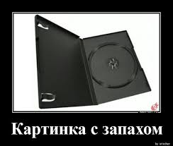

This picture actually has its own unique smell
I learned how to make a site from these guys!
The picture's origin is the nostalgic feeling, caused by a reminder within the picture. It should remind a viewer of the past and their childhood when they received a wanted disc box with a game on it. The juice was the box had a really bad smell of cheap chinese plastic and a pirated copy of the game due to historical reasons